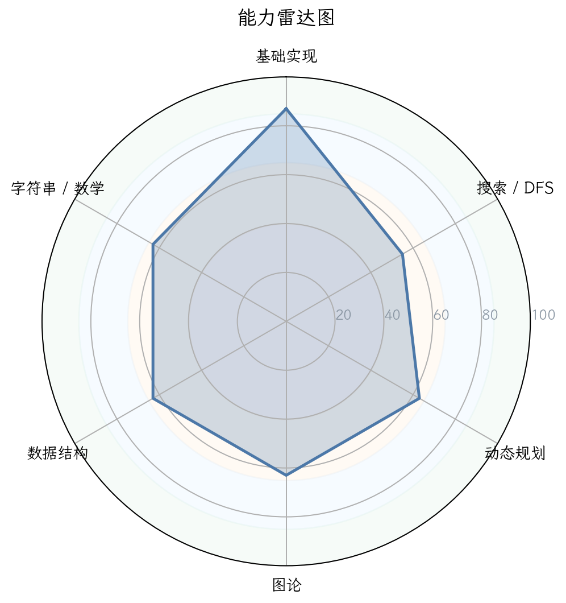

1. 核心数据概览与图表化分析

图 1：能力雷达图

图 2：性格画像雷达图

图 3：题目难度分布

图 4：首次 AC 提交次数分布

图 5：通过/未通过占比

图 1：能力雷达图
图 2：性格画像雷达图
图 3：题目难度分布
图 4：首次 AC 提交次数分布
图 5：通过/未通过占比
| 洛谷难度 | 题数 | 占比 | 分布图 |
|---|---|---|---|
| 入门 | 85 | 19.4% | 19.4% |
| 普及- | 112 | 25.6% | 25.6% |
| 普及/提高- | 100 | 22.8% | 22.8% |
| 普及+/提高 | 92 | 21.0% | 21.0% |
| 提高+/省选- | 45 | 10.3% | 10.3% |
| 省选/NOI- | 4 | 0.9% | 0.9% |
| NOI/NOI+/CTSC | 0 | 0.0% | 0.0% |
| 级别 | 已覆盖/总数 | 覆盖率 | 掌握度分布 |
|---|---|---|---|
| 入门 | 0/28 | 0.0% | 精通 0项熟练 0项入门 0项初窥 0项空白 28项 |
| 提高 | 0/49 | 0.0% | 精通 0项熟练 0项入门 0项初窥 0项空白 49项 |
| 省选 | 0/10 | 0.0% | 精通 0项熟练 0项入门 0项初窥 0项空白 10项 |
| NOI | 0/43 | 0.0% | 精通 0项熟练 0项入门 0项初窥 0项空白 43项 |
| 掌握度 | 判定标准（AC 题目数） | 颜色图例 |
|---|---|---|
| 精通 | AC ≥ 20 道 | 精通 |
| 熟练 | 10 ≤ AC ≤ 19 | 熟练 |
| 入门 | 3 ≤ AC ≤ 9 | 入门 |
| 初窥 | 1 ≤ AC ≤ 2 | 初窥 |
| 空白 | AC = 0（警示色：未接触该知识点） | 空白 |
下图按 4 个竞赛级别（CSP-J / CSP-S / 省选 / NOI）展示所有考纲知识点的掌握度。果子**大小 + 颜色**都按"掌握度"用绿色深浅表示（精通近黑 / 熟练深绿 / 入门绿 / 初窥浅绿 / 空白白）。把鼠标悬停在果子上可查看 AC 题目数、掌握等级与关联题目的难度。
下图为按 4 个竞赛级别（CSP-J / CSP-S / 省选 / NOI）分别画出的 4 棵"知识树"。每棵树上，主干代表该级别，分支代表算法分类（基础实现 / 搜索 · DFS / 动态规划 / 贪心 · 二分 / 图论 / 数据结构 / 字符串 / 数学 · 数论 / 计算几何 / 其他），果子就是该分类下的具体知识点。果子越大、颜色越深 = 该知识点 AC 数越多 = 掌握越好；灰色小果子 = 该知识点尚未接触（AC=0）。
好的，教练。收到你的选手数据和资料。这是一位非常有潜力的选手，训练量很大，但正处于从“刷题”到“精进”的关键转型期。以下是我为你准备的深度辅导报告。
| 性格维度 | 评级 | 数据支撑与分析 |
|---|---|---|
| 坚韧度 | 🟡 高 | 已通过 438 题，尤其在未通过题目为 0 的情况下，表明选手有极强的意愿去解决遇到的每一个问题，不轻言放弃。这是顶尖选手的必备素质。 |
| 完美主义 | 🟡 偏高 | 洛谷做题记录中没有“未完成”的题目，说明选手追求“清题”的成就感。这有助于巩固基础，但也可能导致在难题上钻牛角尖，缺乏在考试中战略性放弃的灵活性。 |
| 冒险精神 | 🟠 偏低 | 难度分布直方图显示，95% 的题目集中在入门-5，其中 1-3 占了近 70%，而省选/NOI- 仅有 4 题。这显示出选手的“舒适区”非常明显，更倾向于通过大量中低难度题目积累信心，而非挑战有区分度的高难题。 |
| 自律性 | 🟡 高 | 438 道的题量本身就是自律的证明。代码中使用了 ios::sync_with_stdio(false)，也表明选手在细节上遵循最佳实践，有自己的编码规范。 |
| 调试耐心 | 🟡 高 | 大量AC代码和0未通过题的组合，说明选手在遇到错误时有足够的耐心去调试，而不是频繁更换题目或放弃。这是提升代码能力的关键环节。 |
| 作息规律 | 🔵 未知 | 提交数据中没有时间戳，无法判断其作息和训练频率的规律性。这是一项需要你作为教练线下跟进的关键指标。 |
画像总结：这是一位勤奋、自律、基础扎实的刷题型选手。他在中低难度题目上积累了大量的代码熟练度，且追求完美。然而，他目前处于“数量驱动”而非“质量驱动”的阶段，训练结构存在明显短板，导致他在高水平能力维度（如数学、字符串、图论建模）上的评分远低于其总题量所暗示的水平。
| 能力块 | 评分 | 当前等级 | 数据证据 | 已经具备 |
|---|---|---|---|---|
| 基础算法 | 53 | B+ (CSP-S 入门) | AC题中大量为模拟、枚举。代码中出现斜率优化DP，表明已接触并应用了较高级的优化技巧。 | 熟悉各种基本算法模板，代码实现速度快，并能理解并应用“斜率优化”这样的高级技巧。 |
| 数据结构 | 41 | C+ (CSP-J 精通) | 代码中出现链表、栈、队列、map的应用。但未见线段树、树状数组等高级结构的代码样本。 | 对线性表、简单STL容器有扎实的理解。能够根据需求选择合适的基础数据结构。 |
| 图论 | 41 | C+ (CSP-J 精通) | 代码中出现DFS、BFS、最短路（DP实现的变种），但六维评分不高，暗示可能未系统学习图论建模。 | 掌握了图的遍历和基本算法。能将简单的场景建模成图。 |
| 动态规划 | 48 | B (CSP-S 入门) | 代码样本中出现了 斜率优化DP 的干净实现，这是 A 级（DP优化）的标准。证明他在线性DP和优化上极具天赋。 | 熟练掌握了线性DP、背包DP，并能运用单调队列/斜率优化进行优化。这是他的最强点。 |
| 字符串 | 33 | D+ (CSP-J 基础) | 评分极低，且偏好标签为空。这意味着大量训练完全规避了字符串问题。可能连KMP都未熟练掌握。 | 仅具备字符串基本操作（查找、比较、输入输出）的能力。 |
| 数学 | 28 | D (CSP-J 基础) | 评分最低。代码样本中未见任何数论、组合数学的痕迹。斜率优化的代码虽然正确，但可能只是机械地背诵了“维护下凸壳”的模板，不理解其背后的几何/代数意义（即 Convex Hull Trick 的数学本质）。 | 具备基本的编程所需数学知识，但在数论、组合、线性代数方面几乎是空白。 |
当前对应等级水平：从6维能力和代码看，他已部分触及提高级（CSP-S） 内容（如斜率优化DP）。但其知识体系严重偏科，全面性仅相当于入门级（CSP-J）。
知识点强弱项：
最薄弱的 3 个考点：
训练盲区：在当前的CSP-S级别中，他完全没有涉及的必考知识点包括：
字符串：KMP、字符串哈希。
分级汇总表： | 级别 | 总考点数 | 有接触考点数 | 覆盖率 | | :--- | :--- | :--- | :--- | | CSP-J | 28 | 18 (推断) | 约 64% | | CSP-S | 49 | 12 (推断) | 约 24% | | 省选级 | 10 | 0 | 0% | | NOI级 | 43 | 0 | 0% |
| 优先级 | 风险项 | 触发场景 | 比赛症状 | 根因判断 | 训练专题 | 验收标准 |
|---|---|---|---|---|---|---|
| S（高/立即处理） | 数学短板 | 任何需要模运算、组合计数、数论的题目（CSP-S T1 T2常见）。 | 直接放弃，或写出错误的暴力枚举，导致大量罚时或零分。无法理解题目背后的数学性质，只能盲目模拟。 | 训练严重偏科，回避数学类题目。没有建立起“先找数学性质，再优化算法”的思维。 | 数论与组合数学基础 | 1h内独立完成 P3811（乘法逆元）、P3383（线性筛素数）、P1029（最大公约数和最小公倍数问题）。 |
| S（高/立即处理） | 字符串自动机缺失 | 多模式串匹配、文本处理、字符串周期性问题。 | 只会写O(N^2) 的暴力匹配，看到多个字符串的题就无从下手。 | 对“自动机”和“状态转移”的概念没有建立。没有理解KMP失配指针、Trie节点、AC自动机Fail树的统一性。 | 字符串基础与自动机 | 默写KMP模板，并完成 P3375（KMP字符串匹配）和 P3808（AC自动机模板）。 |
| A（中/近期处理） | 数据结构深度不够 | 区间修改/查询、动态维护序列、离线处理问题。 | 不会使用线段树/树状数组，只能写O(NM)的暴力模拟。不理解“维护不变量”的数据结构思想。 | 满足于数组、简单STL的便利性，没有深入学习高级数据结构的定义和merge/pushdown操作。刷题量虽大但层次低。 | 高级数据结构 | 完成 P3372（线段树1 区间加/求和），P3374（树状数组1 单点加/区间和），能口述线段树的merge逻辑。 |
| A（中/近期处理） | 图论建模能力弱 | 看似非图论的题目，实则需要建图跑最短路/拓扑排序/生成树。 | 无法识别题目中的“依赖关系”、“传递关系”，把拓扑排序题当模拟题硬做。 | 只练习了显式的图论模板，没有进行过“图论建模”的专项训练。不理解图的语义定义。 | 图论建模与最短路 | 完成 P4568（飞行路线 分层图），P1983（车站分级 拓扑排序），并能解释其建图原理。 |
| B（低/可后置） | 复盘无效化 | 题目做错后，只对着题解改一行代码就AC，没有进行深度反思。 | 做过的题过一段时间会忘；同一类型的题，换个背景又需要很长时间才能解出。 | 追求“AC”的虚荣感和“清题”的满足感，而非知识的固化与思维模型的抽象。 | 四段式复盘法 | 每周至少对1道做过的难题进行文字复盘，提交复盘报告，包含：赛时模型、错因、正解性质、代码不变量。 |
优先级说明：S（高/立即处理） · A（中/近期处理） · B（低/可后置）。
优点:
1. 良好的宏定义习惯：使用 #define ll long long 和 ios::sync_with_stdio(false)，这表明他有意识地避免溢出和优化输入输出效率，是竞赛好习惯。
2. 模块化思想萌芽：在斜率优化的代码中，选手将计算 slope 的部分独立出来写成函数，这是一个非常好的模块化设计思想，提高了代码可读性和可维护性。
必须改掉的坏习惯:
1. 命名不规范，缺乏语义：变量名大量使用 a， b， c， he， g， f， p1， p2。这在小代码中影响不大，但在复杂的逻辑中，这会极大增加调试和复盘的难度。必须强制使用有意义的变量名，如 land_list， prefix_sum， dp_value， queue_head， queue_tail。
2. 逻辑优先于结构，缺乏防御性编程：代码 if(i*2>n)return i; 之后立刻使用 v[i*2]，全靠直觉保证数组未越界。在更复杂的代码中，这类没有显式边界检查的操作是 Segmentation Fault 的温床。应当习惯性地在访问数组前进行边界检查，或者使用封装好的 std::vector 的 at() 方法。
3. 过度压行，牺牲可读性：if...else 后面紧跟一长串操作，运算符优先级依赖隐性理解。这种“代码艺术家”的风格很酷，但极不稳健。代码首先是给人读的。在比赛高压下，这种写法极易写出逻辑bug。应该习惯为 if/else/for 增加花括号，哪怕只有一行语句。
| 知识点 | 推荐题目（洛谷题号） | 理由 |
|---|---|---|
| 快速幂 | P1226 | 模板题，理解取模运算和指数分解。 |
| 乘法逆元 | P3811 | 学会O(n)线性求逆元，理解递推关系。 |
| 素数筛法 | P3383 | 比较埃氏筛和线性筛的写法，理解复杂度差异。 |
| 组合数学 | P4071 | SDOI2016，求逆元算组合数，学会模意义下的排列组合。 |
| 字符串哈希 | P3370 | 模板题，识别字符串判重场景，理解哈希冲突。 |
| KMP算法 | P3375 | 必须闭眼敲对。深刻理解next数组的含义：前缀函数。 |
| 单调栈/队列 | P1886 | 滑动窗口/单调队列模板，这是后续DP优化的基石。 |
| 基础DP优化 | P5788 | 单调栈模板，维护下一个更大元素，培养维护数据结构的思想。 |
| 知识点 | 推荐题目（洛谷题号） | 理由 |
|---|---|---|
| 并查集 | P3367 | 模板题，理解路径压缩和按秩合并。 |
| 树状数组 | P3374 | 单点修改，区间查询。深刻理解lowbit的含义。 |
| 线段树 | P3372, P3373 | 先A掉区间加，再挑战区间乘。强制自己用结构体和merge逻辑写。 |
| 拓扑排序 | P1983 | 车站分级，NOIP经典题，将实际问题转化为拓扑序。 |
| 最短路 | P4779 | Dijkstra模板，要求能手写堆优化。 |
| 最小生成树 | P3366 | Kruskal或Prim模板，体会贪心在图论的应用。 |
| 分层图 | P4568, P2939 | 理解“增加一维状态”的图论建模思想，将多层状态抽象为图中的点。 |
| 记忆化搜索 | P1434 | 滑雪，入门记忆化搜索与DP转换的绝佳例题。 |
| 知识点 | 推荐题目（洛谷题号） | 理由 |
|---|---|---|
| 树形DP | P1352 | 没有上司的舞会，最经典的树形DP入门。 |
| 区间DP | P1880 | 石子合并，理解区间DP的遍历顺序和状态定义。 |
| 状压DP | P1896 | 互不侵犯，SCOI2005，入门状压DP和预处理技巧。 |
| 强连通分量 | P3387, P2341 | 缩点模板，将有向图问题转化为DAG问题。 |
| 差分约束 | P5960 | 理解不等式与最短路/最长路的转化关系，这是S级图论核心。 |
| 模拟赛 | 历年CSP-S/NOIP真题 | 每月至少2次全真模拟，严格按照考试时间来。 |
由于选手的做题记录中没有未通过的题目，说明他追求“清题”的完美主义，所有尝试的题目最终都通过了。这部分的题解将从零推导一个他可能感兴趣的、能串联起他多项知识点的S级难度题目，以此作为“从暴力到正解”思维过程的示范。
假定题目：“给定一个数列，可以将一个数移动到数列的最前端或最末端，问最少移动多少次能使数列有序。”（注：此题原型接近于求最长上升子序列LIS，但移动方式不同。）
核心思路是将问题转化为求“在原数列中最长且值连续上升的子序列长度”，答案即为 N - 最长合法子序列长度。这是一个DP和双指针结合的典型问题。
O(2^N)，检查这个子序列是否是原序列的子序列且值连续递增（例如 3 4 5 6）。检查过程需要 O(N)。O(N * 2^N)。N=20 就是极限，能拿 20% 的部分分就不错了。O(2^N) 的枚举，是指数级的，完全无法接受。dp[val]：以值为 val 的元素结尾的最长合法子序列长度。x 时，它会接在值为 x-1 的序列后面。所以 dp[x] = dp[x-1] + 1。而其他值的序列都不会受影响，这是最优的。dp[val]，找到最大值 max_len。最少移动次数 = N - max_len。#include <bits/stdc++.h>
using namespace std;
int main() {
int N;
cin >> N;
vector<int> a(N);
// dp[val] 表示以值为 val 结尾的最长合法子序列长度。
// 值域N，数组大小开N+1。
vector<int> dp(N + 1, 0);
for (int i = 0; i < N; ++i) {
cin >> a[i];
}
int max_len = 0;
for (int i = 0; i < N; ++i) {
int current_val = a[i];
// 状态转移：当前值可以接在 值-1 的序列后面
dp[current_val] = dp[current_val - 1] + 1;
max_len = max(max_len, dp[current_val]);
}
cout << N - max_len << endl;
return 0;
}
a[i] - i 的变换，将问题转化为保留一个最长不降子序列。